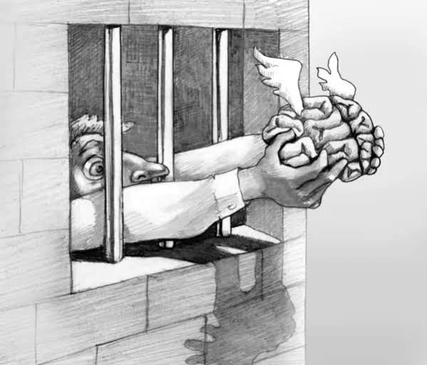

Libre Penseur
Je marche seul,
dans les zones grises
où les certitudes s’effondrent.
Les dogmes restent derrière moi.
Le vent me murmure des doutes,
et l’aube, parfois, éclaire mes hésitations.
Rien ne tient mon esprit.
Pas de chaînes.
Pas de règles
si ce n’est celle du cœur qui bat.
Face à l’immensité qui me défie,
je suis une étincelle,
un frisson,
un instant de clarté.
On tente de fermer mes yeux,
de me servir des vérités forgées
dans le métal froid des certitudes.
Mais je remonte aux sources,
là où commence tout,
là où la mer ne connaît pas de limites.
Je pense libre.
Je vais sans guide,
mon feu intérieur pour seule lumière.
Chaque matin, je recommence,
hors d’atteinte,
debout,
en silence.
Djamel Metref
At Yenni le 10 juillet 2025

← Tous les poèmes